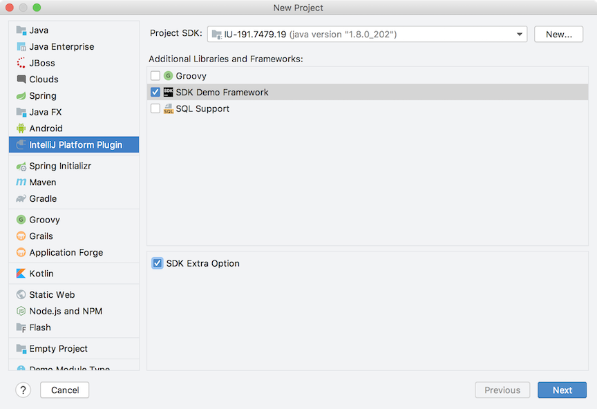

Supporting Frameworks
The following tutorial shows how to support a custom framework type for a project and make this framework type embedded in a project wizard as a UI component.n The examples in this tutorial rely heavily on the framework_basics code sample.
1. Creating a new framework
In oder to make a custom framework available and configurable for a project the FrameworkTypeEx class needs to be extended, in this example to make the DemoFramework class.
public class DemoFramework extends FrameworkTypeEx {
}
2. Registering framework
The newly created framework class should be registered as an extension point by adding com.intellij.framework.type extension in
plugin.xml
configuration file:
<extensions defaultExtensionNs="com.intellij">
<framework.type implementation="org.intellij.sdk.framework.DemoFramework"/>
</extensions>
3. Setting up mandatory attributes
The framework component should have a unique name passed as a string literal to the constructor. It is best if this is the FQN name of the class:
public class DemoFramework extends FrameworkTypeEx {
public static final String FRAMEWORK_ID = "org.intellij.sdk.framework.DemoFramework";
protected DemoFramework() {
super(FRAMEWORK_ID);
}
}
The Presentable name and icon define the appearance of visual components related to the framework:
public class DemoFramework extends FrameworkTypeEx {
@NotNull
@Override
public String getPresentableName() {
return "SDK Demo Framework";
}
@NotNull
@Override
public Icon getIcon() {
return SdkIcons.Sdk_default_icon;
}
}
4. Creating provider for enabling framework support
To make the framework set up available while executing the steps to create a project, the
DemoFramework.createProvider() method must be implemented to return an object of type FrameworkSupportInModuleConfigurable, which adds the framework to a module.
In this example the framework is added to any ModuleType without checking, which is usually not the case.
@NotNull
@Override
public FrameworkSupportInModuleProvider createProvider() {
return new FrameworkSupportInModuleProvider() {
@NotNull
@Override
public FrameworkTypeEx getFrameworkType() {
return DemoFramework.this;
}
@NotNull
@Override
public FrameworkSupportInModuleConfigurable createConfigurable(@NotNull FrameworkSupportModel model) {
return new FrameworkSupportInModuleConfigurable() {
@Nullable
@Override
public JComponent createComponent() {
return new JCheckBox("SDK Extra Option");
}
@Override
public void addSupport(@NotNull Module module, @NotNull ModifiableRootModel model, @NotNull ModifiableModelsProvider provider) {
// This is the place to set up a library, generate a specific file, etc
// and actually add framework support to a module.
}
};
}
@Override
public boolean isEnabledForModuleType(@NotNull ModuleType type) {
return true;
}
};
}
After compiling and running the code sample above an extra option for configuring the newly created Demo custom framework should be available in the Project Wizard:
